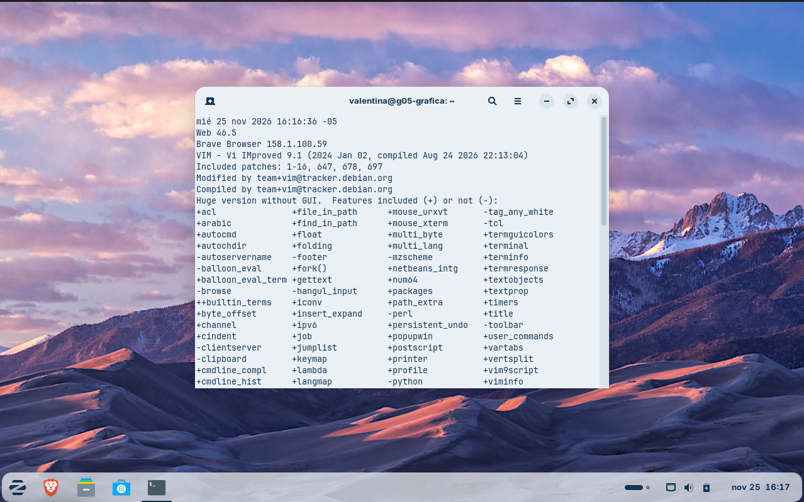
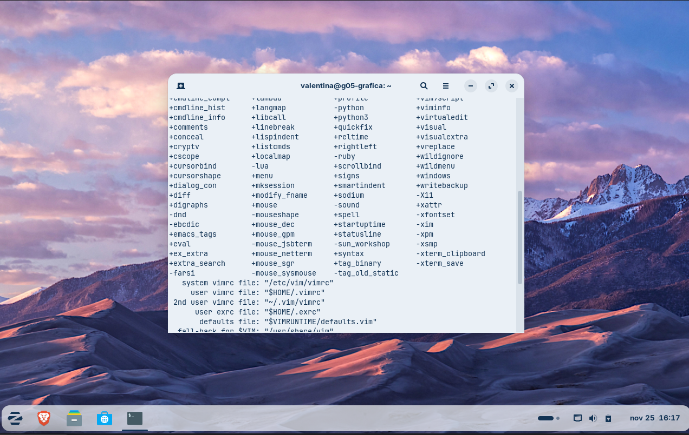
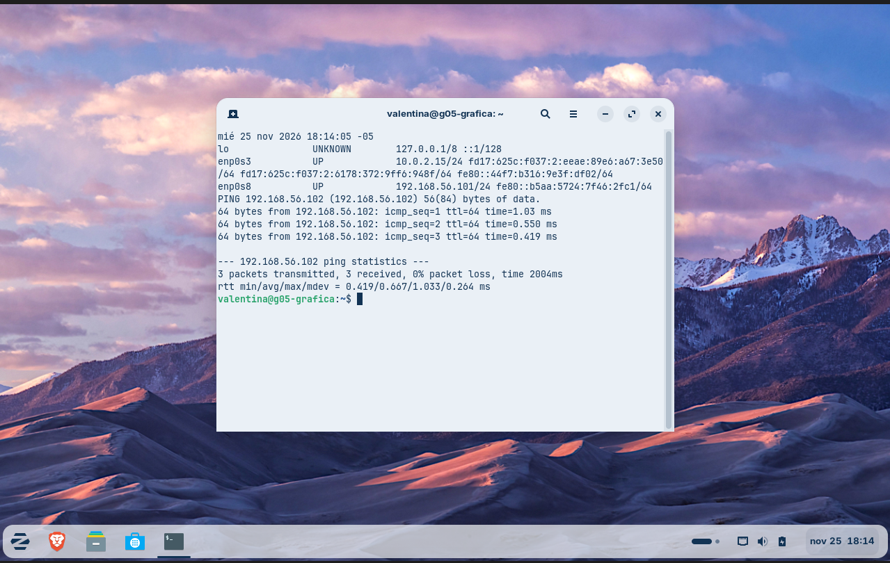
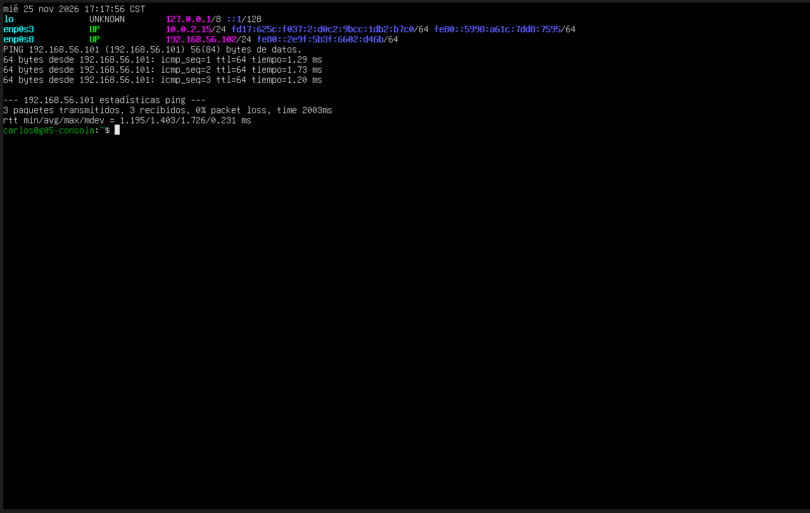
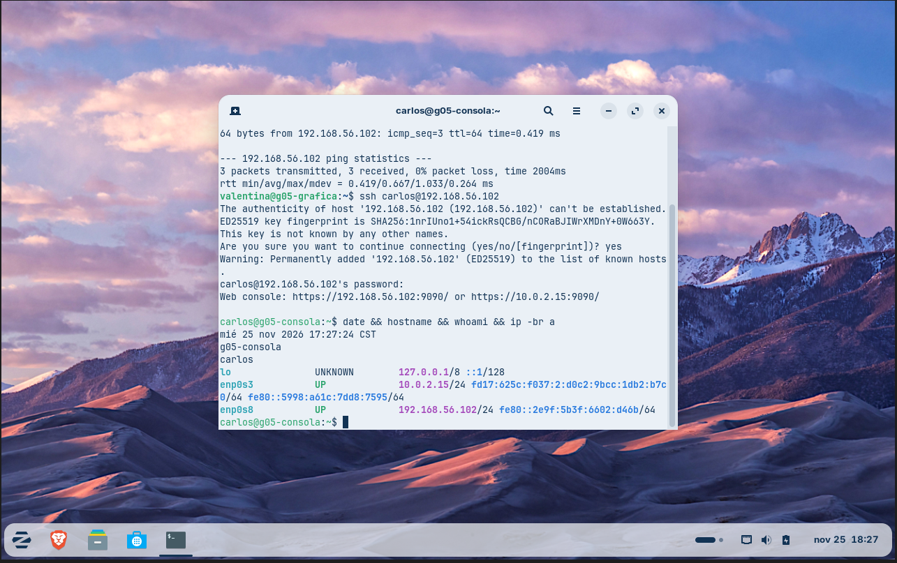
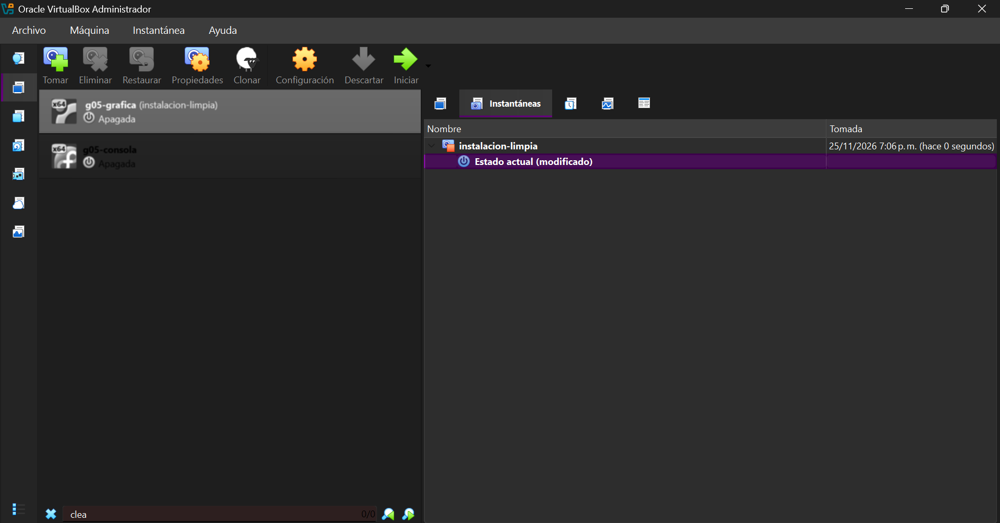
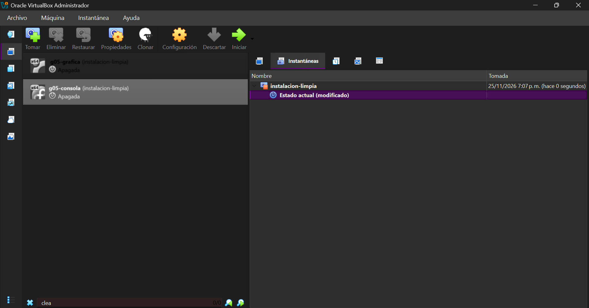
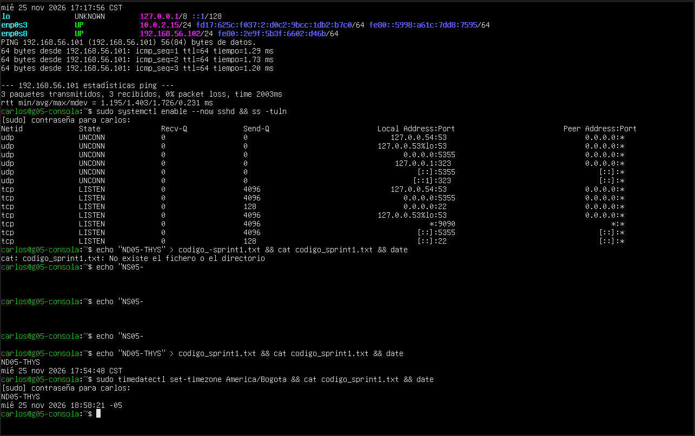

Proyecto Final de Sistemas Operativos · Grupo 05 · Universidad del Valle
Integrantes: Valentina Rendón Plaza, Carlos Alberto Loaiza Mosquera y Matías Sánchez Erazo.
| Integrante | Parte que hizo |
|---|---|
| Valentina Rendón Plaza | VM gráfica (g05-grafica): particiones, programas, red, SSH, instantánea y código del sprint. |
| Carlos Alberto Loaiza Mosquera | VM consola (g05-consola): particiones, herramientas, red, instantánea y código del sprint. |
| Matías Sánchez Erazo | Esta página web y el video del sprint. |
| Máquina virtual | Sistema operativo | Usuario principal | vCPU | RAM | Disco | IP NAT | IP solo-anfitrión |
|---|---|---|---|---|---|---|---|
| g05-grafica | Zorin OS 18.1 | valentina | 2 | 4096 MB | 25 GB | 10.0.2.15 (DHCP) | 192.168.56.101 |
| g05-consola | Fedora Server | carlos | 2 | 2048 MB | 25 GB | 10.0.2.15 (DHCP) | 192.168.56.102 |
ESCRIBIR AQUÍ qué hicimos para instalar la VM gráfica con particionado manual y qué programas instalamos.
| Partición | Punto de montaje | Sistema de archivos | Tamaño (lsblk) | Por qué ese tamaño |
|---|---|---|---|---|
| sda1 | / | ext4 | 14 G | ESCRIBIR UNA FRASE |
| sda2 | swap | swap | 1,9 G | ESCRIBIR UNA FRASE |
| sda3 | sin montar | sin sistema de archivos | 286 M | ESCRIBIR qué es esta partición |
| sda4 | /home | ext4 | 8,8 G | ESCRIBIR UNA FRASE |
date lsblk df -h cat /etc/fstab

date, lsblk y df -h.
/etc/fstab en g05-grafica.| Tipo | Programa | Versión que se ve en la captura |
|---|---|---|
| Navegador 1 | Web (GNOME Web) | 46.5 |
| Navegador 2 | Brave | 158.1.100.59 |
| Editor 1 | Vim | 9.1 |
| Editor 2 | ESCRIBIR AQUÍ el segundo editor | versión |
Comandos usados: ESCRIBIR AQUÍ los comandos que ejecutamos para mostrar las versiones.



ESCRIBIR AQUÍ qué muestra cada captura de este punto, con sus palabras.
ESCRIBIR AQUÍ qué hicimos para instalar la VM de consola con particionado manual y las herramientas.
| Partición | Punto de montaje | Sistema de archivos | Tamaño (lsblk) | Mínimo del documento | Por qué ese tamaño |
|---|---|---|---|---|---|
| sda1 | sin montar | — | 2 M | — | ESCRIBIR qué es esta partición |
| sda2 | /boot | xfs | 1 G | — | ESCRIBIR UNA FRASE |
| sda3 | /var | xfs | 12 G | 10 GB | ESCRIBIR UNA FRASE |
| sda4 | / | xfs | 6 G | 5 GB | ESCRIBIR UNA FRASE |
| sda5 | /home | xfs | 3,8 G | 1 GB | ESCRIBIR UNA FRASE |
| sda6 | swap | swap | 2 G | 1 GB | ESCRIBIR UNA FRASE |
sudo dnf install make rsync curl git wget date lsblk df -h cat /etc/fstab date make --version rsync --version curl --version git --version wget --version

lsblk, df -h y cat /etc/fstab, con la fecha al inicio.
ESCRIBIR AQUÍ qué muestra cada captura de este punto, con sus palabras.
ESCRIBIR AQUÍ cómo configuramos los dos adaptadores en cada VM y cómo comprobamos que se ven entre sí.
| VM | Interfaz | Adaptador | Dirección |
|---|---|---|---|
| g05-grafica | enp0s3 | NAT | 10.0.2.15/24 |
| enp0s8 | Solo-anfitrión | 192.168.56.101/24 | |
| g05-consola | enp0s3 | NAT | 10.0.2.15/24 |
| enp0s8 | Solo-anfitrión | 192.168.56.102/24 |
# En g05-grafica date ip -br a ping -c 3 192.168.56.102 # En g05-consola date ip -br a ping -c 3 192.168.56.101


ESCRIBIR AQUÍ qué muestran las capturas de red, con sus palabras.
ESCRIBIR AQUÍ cómo habilitamos SSH en la consola y cómo entramos desde la VM gráfica.
# En g05-consola (servidor) sudo systemctl enable --now sshd ss -tuln # En g05-grafica (cliente) ssh carlos@192.168.56.102 # Ya dentro de la sesión SSH date && hostname && whoami && ip -br a

ESCRIBIR AQUÍ qué muestra la captura, con sus palabras.
ESCRIBIR AQUÍ cómo tomamos la instantánea y por qué la tomamos con la VM apagada.
| VM | Nombre de la instantánea | Estado de la VM | Hora en que se tomó |
|---|---|---|---|
| g05-grafica | instalacion-limpia | Apagada | 25/11/2026, 7:06 p. m. |
| g05-consola | instalacion-limpia | Apagada | 25/11/2026, 7:07 p. m. |


ESCRIBIR AQUÍ qué muestran las capturas y para qué sirve una instantánea, con sus palabras.
Código del Sprint 1: ND05-THYS
# En g05-grafica echo "ND05-THYS" > ~/codigo_sprint1.txt && cat ~/codigo_sprint1.txt && date # En g05-consola echo "ND05-THYS" > codigo_sprint1.txt && cat codigo_sprint1.txt && date

codigo_sprint1.txt en el home de valentina.
codigo_sprint1.txt en el home de carlos.Video de máximo 3 minutos, grabado en pantalla continua y sin cortes.
Ver el video del Sprint 1 en YouTube
Usamos Claude (Anthropic) para armar la estructura y el estilo de esta página HTML, y para pasar a las tablas los datos que se ven en las capturas (tamaños de partición, direcciones IP y versiones). No lo usamos para generar capturas, video ni las explicaciones: las capturas las tomamos en nuestras máquinas virtuales y las explicaciones las escribimos nosotros.